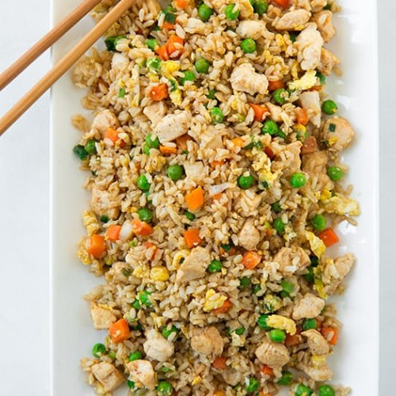

Chicken Fried Rice

This is an easy one-pan chicken fried rice recipe!
This is a great recipe to make when you are short on time and need to feed the family! We'll be using leftover ingredients which makes this dish quick and easy!
Using leftover rice and chicken from another day and a handful of fresh veggies will add color and texture to this simple and delicious dish!
Ingredients
- 1 tablespoon canola oil
- 1 teaspoon sesame oil
- 1/3 cup diced carrots
- 1/4 cup sliced green onions, white and lighter green parts
- 1/2 teaspoon garlic powder
- 1/2 teaspoon ground ginger
- 3 cups cooked rice, cooled
- 1 teaspoon kosher salt
- 1/2 teaspoon ground black pepper
- 1 cup shredded cooked chicken
- 12 cup frozen peas
- 2 tablespoons butter
- 2 large eggs, beaten
- 2 tablespoons soy sauce
- 2 teaspoons rice vinegar
- 2 tablespoons sriracha mayonnaise, or to taste
- 1 tablespoon sliced green onions, or to taste
Steps
- Heat canola and sesame oils in a large, nonstick skillet over medium-high heat.
- Add carrots and green onions and stir occassionally for 2 minutes.
- Stir in garlic powder and ginger and cook for 2 minutes.
- Stir in rice, salt, and pepper and cook. Stirring only once or twice, or until the rice is lightly browned, about 5 minutes.
- Stir in chicken and peas; cook for 2 minutes
- Push rice mixture to the sides of the pan, creating a circle in the middle. Add butter to the center of the pan, when melted pour eggs and stir often.
- Once eggs are almost set, about 3 minutes, stir eggs into rice mixture
- Stir in soy sauce and rice vinegar, cook for 2 more minutes.
- Serve with sriracha mayo and green onions and enjoy!